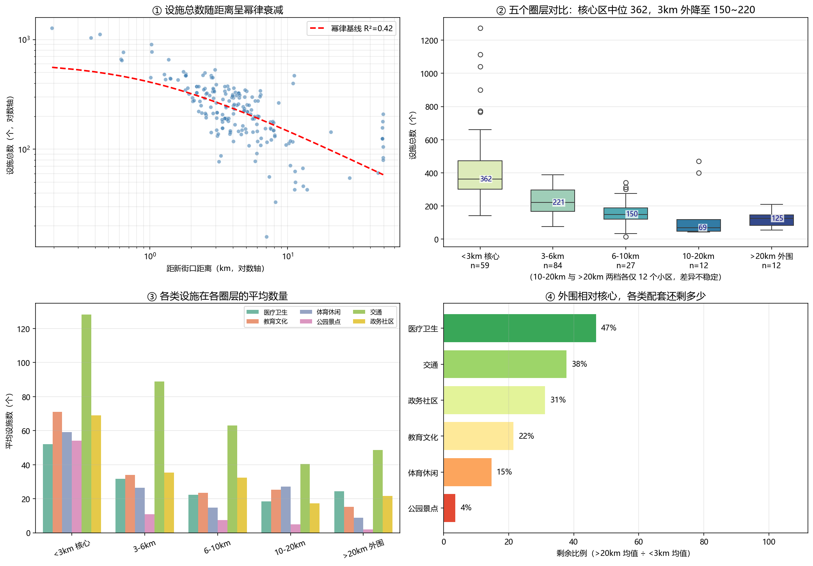

2完整数据分析项目
4 周精选基础学习路径
12项目分析图表
1 条从学习到应用的主线

Learning path
基础学习路径
精选每个阶段最能说明能力变化的文件，而不是堆放所有练习。每一周都与后续城市数据项目中的一个实际环节对应。
From practice to project
基础练习最终落实到真实项目
函数与模块
→
JSON / CSV 读写
→
pandas 清洗统计
→
图表与空间表达
→
城市更新分析项目
Working principles
方法与公开原则
作品集不仅关心“画出了什么图”，也关心数据是否可解释、结论是否克制、公开内容是否安全。
来源可追溯
记录公开资料来源和字段口径，不在缺少证据时把区级汇总强行拆分到单个小区。
结论有边界
区分相关与因果，明确 POI 数量不能代替设施质量、容量、可达性和居民满意度。
代码可公开
API 密钥只从环境变量读取；不提交真实密钥、虚拟环境、本机绝对路径和私人数据。